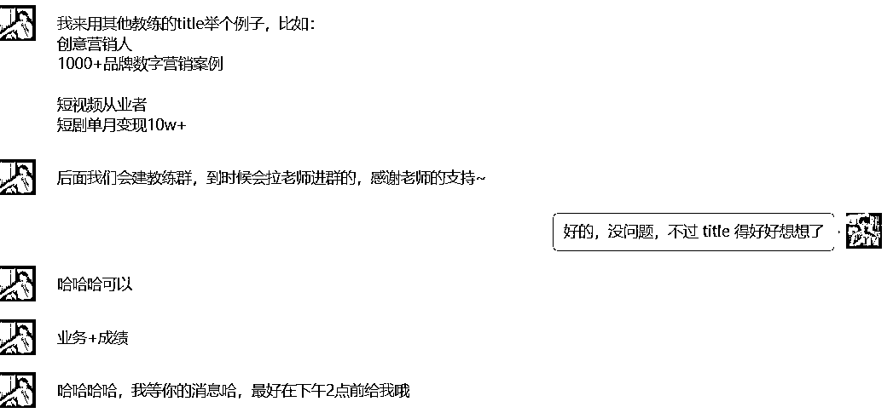
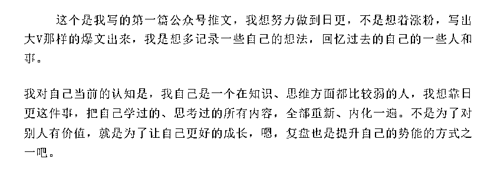
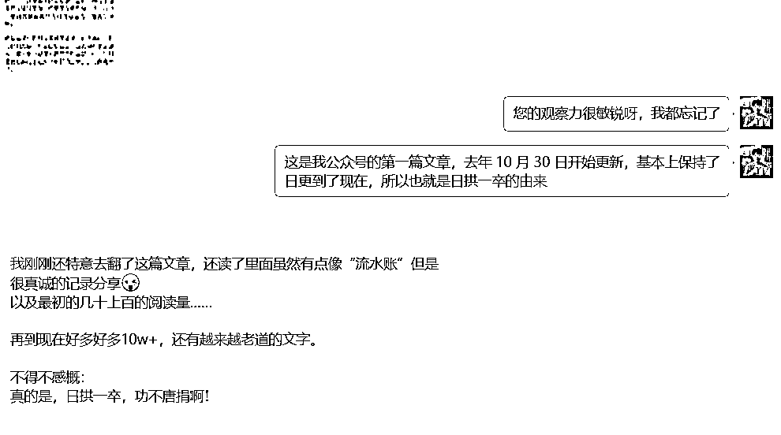
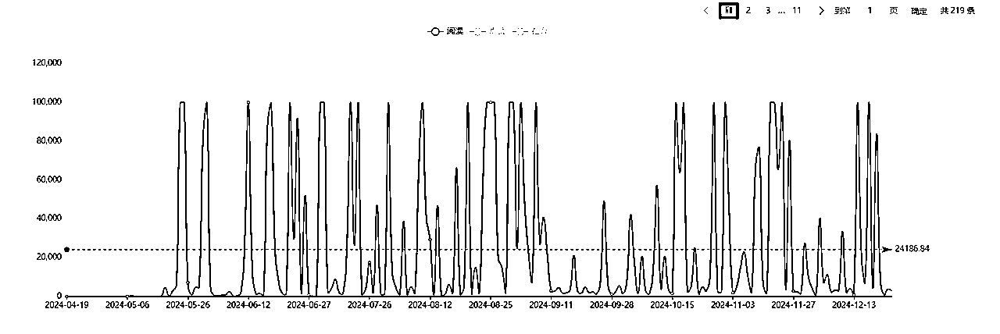

来源：https://uxem6iksdzz.feishu.cn/docx/X3b9dXVymoYFVpxKvhZci6fnnsU
hello大家好，我是大何，这是我第二期当生财航海的教练，没想到这么快，这次的航海也快要到尾声了。
受领队的邀请，在这公众号写作生财航海的最后阶段，再来给大家分享一些内容。
分享点什么呢？
我其实纠结了几天一直都没想好分享的主题，
一方面，我并不觉得自己有多厉害，我只是比大家早做了一段时间，又多坚持了一会。
说个真事，第一次当航海教练的时候，运营大大找我要教练的自我介绍，我间隔了好久才回她，
其实真不是我性格高冷，实在是一时半会没能给自己想出几条厉害的互联网title。

另一方面，咱们这次的航海，成分比较复杂，
有完全不懂的新手，有一直做爆文的老玩家，有爆文流量不在，但是有一定粉丝的账号，纠结是继续做爆文还是 ip，还有想做 ip，但是卡在获得流量的。
总之，是众口难调。
不过仔细想了下，这些阶段我在过去的一年多时间里，都好像经历过。
所以我决定今天分享的主题，就是分享我自己做公众号一年多来的心路历程，可能会有点长，但是希望可以耐心看完。
我开始做自媒体的时间并不长，在去年10月的最后一天，注册了账号并开始了更新。
到目前为止，看了一下后台，加上被删除的文章和非原创的文章， 一共更新了大概350篇左右。
除去账号被封禁的日子，基本上是保持了一个日更的频率。
为什么会想到做公众号呢？
就真的是那句很老套的话，因为看见，所以相信。
彼时的我，刚刚离职两个月，还是裸辞，对未来真是挺迷茫的，一直没想好干什么，离开了干了五年的工作岗位之后，忽然发现自己好像啥也不是，
这段时间，内耗，焦虑，挫败感几种情绪一直在来回拉扯着。
虽然每天都想着赶紧找点项目来做一做，看了很多互联网赚钱的案例，但是始终是无从下手的感觉。
形容一下这种状态，就是大脑已经塞满了恐慌和焦虑，但它们都被困在一个拒绝行动的身体里，内心在尖叫，但表面上却只是坐在这里吃薯片。
直到有一天，前后刷完生财的两篇精华贴，才开始下定决心的要开始写点什么，发什么一点改变。
之前在群里有说过，一篇就是明白老师的帖子，坚持日更1700天，记录了他是如何通过坚持日更慢慢从人生的低谷中走了出来。
另外一篇白龙笔记分享的创业经历，他的经历就和那时候的我的处境很相似，离职，创业，花了两年的时间踏实学习，沉淀，研究了很多互联网项目，日更公众号，之后渐渐有了自己的影响力，如今社群也做的风生水起。
我依然记得他们打动我的点，是他们真诚的文字，以及字里行间，平凡、朴素，但奋发向上的力量，那种日拱一卒的理念，这也是激励我开始下定决心做一个日更公众号。
我在我更新的第一篇的文章最后一段写下：
我对当前的自我认知是，我是一个在知识、思维方面都比较弱的人，我想通过日更的这个动作，倒逼自己去学习，复盘，输出，每天都进步那么一点点。

所以最开始写公众号的初心就是为了记录思考和复盘，提升自我，至于靠公众号赚钱，写出10w+的爆文，当时还真没想过。
但是我相信，只要坚持终身学习，日拱一卒，每天都进步一点，那我未来肯定不会混的太差。
现在回头来看，或许就是我一开始比较低的预期，也让我能够熬过那段无人问津的时光。

一年时间过去，我也不知道是从什么时候开始，写一两千字的文章，对我来说好像也没有那么难了，写出10w+的文章，也不再是遥不可及的梦想，这变化就藏在过去日拱一卒的每一天里面。
所以还是那句话，不下牌桌，就有机会，自媒体写作就是走窄门，走的越久，对手越少，路越宽敞。

1.起步阶段——记流水账
虽然下定决心开始写，但是起步并没有自己想的那么简单。
写第一篇文章时，我磕磕绊绊敲了两天才写完，排版什么的都是不会的，粘贴到公众号编辑器里面又糊成了一大坨，写完文章发到手机上预览，预览了好多次，看看是哪又不对劲了，最后一顿操作猛如虎，一看阅读只有五。
现在回头看那篇文章，当然是写的很烂了，但是当时真的是用尽洪荒之力才写出来的。
这其实就是基本功太差了，我本科学的是土木，以前语文就学得稀烂，高考之后，更是基本就和“文坛”告别了。
但是好在我也没有什么写作压力，一开始就瞎写，就想到什么写什么，也不懂什么赛道，对标，选题，就是最简单地“写字”，把脑子里面的想法都用键盘敲出来。
坚持日更的最初一两个月的进步真的是肉眼可见的，因为真的什么都是从零开始学，学排版，学找插图，设置公众号后台的功能，学习引流，每天都能学到点新知识。
但是问题就是多是一些自说自话的碎碎念，大多像是一些流水账，或者叫大号的朋友圈，文章自然也没有什么水花。
在这段期间其实也没有all in做公众号，还是在尝试其他的网赚项目，比如我还尝试做了小红书，做了闲鱼电商（卖二手机），于是写作内容又慢慢开始写自己做项目的思考和复盘。
但是由于这几个项目都做的不咋滴（自己不太感兴趣），后来也都放弃了。
唯一一直坚持做的就是每天更新的公众号。
每天抽出一点时间来码字，虽然没赚到几块钱，但似乎也成为了我对抗焦虑的法宝——至少我今天还写了一篇推文，不至于是一事无成。
这期间，写的慢是最大的问题。
写的慢的原因，我现在想来，大抵是因为脑子里面的东西太少了，大学毕业之后就再没看过几本书，有句话说的是，人一生的绝大多数困境，说到底都是源于一件事：信息数量和质量不足。
you are what you read（你阅读的内容造就了你）
🎯如果说一个人的创造力就像酿酒，首先就是要输入原材料，也就是要提高信息密度，而输入最重要的就是语言，你能看懂别人看不懂的文字，你能看到别人看不到的资料，你自然就会多了一些机会和创造力。
举个例子：
比如说出去游玩时候，看到辽阔壮美的自然景象，
有文化的人，看到沙漠落日可能会来一句，大漠孤烟直，长河落日圆。
看到无边的雪景，山舞银蛇，原驰蜡象，欲与天公试比高。
看到夕阳下的湖面，落霞与孤鹜齐飞，秋水共长天一色。
而你想要发自内心地赞叹一下，结果憋了半天，最后说了一句，卧槽，好美！
不过我也明白凡事总得有这么一个积累的过程的。 刚开始的能力增长都是很慢的，所以最开始我对自己的要求是，先保持日更100天，文章写成啥样都先不管他。
大概有半年多时间，我写的文章都基本没人看，都是几个要好的朋友在一直点赞，文章收益基本为0。
偶尔也确实会自我怀疑一下，就是我写的这些东西有价值嘛？
不得不说，没有正反馈的坚持真的很难，那种手抓着栏杆，身体吊在半空，垂死挣扎的感觉。
不瞒大家笑话，要不是就业市场的冷水更凉，我可能都坚持不到今天回来和大家吹牛皮。
我现在回过头来反思这段时间的问题，就是一直呆着自己的舒适区里面，写点内容来完成自己的日更任务。
用战术上的勤奋来掩盖战略上的懒惰。
把公众号当成朋友圈来发，其实真的很难把个人ip做起来。
而没有正反馈的激励，往往也卡住大多数人。
所以在度过最开始的适应阶段之后，一定要想明白，多问问自己，公众号写作的意义是什么？
虽然说坚持就是胜利，但是也要在正确的道路上坚持才能得出这个结论。
我自己分析原因，我觉得就是因果倒置了。
🎯要想清楚日更不是关键，关键还是在于有没有通过日更迭代自己，写的文章有没有信息增量，有没有提供价值，有没有解决问题，如果没有，那其实就是为了更新而更新。
🎯写作的根本就是思考，而且是效率很高的思考，是可以积累的思考，是可以产生影响力的思考。
而所谓成长，本质上就是思考能力和认知能力的增长，只要它们增长了，我们的文章才能产生影响力。
2.第二个阶段——爆文写作
然后时间就到了12月，我第一次参加了生财的公众号写作的航海。
事情也开始发生了一点转变。
就跟着生财的航海，我知道了很多以前闭门造车时候不懂的知识盲区，比如选题，搭建素材库，赛道选择，如何起标题，如何找对标账号等等，这才知道，原来公众号还能这么玩？
于是航海期间，我又开了一个号新号来写，开始按爆文的思路来做公众号。
虽然在航海期间，我没能做出成绩，但是也是给我打开了一扇新的大门。
航海结束之后爆过一篇几万阅读的文章，算是跑通了这个项目，这也给了我继续干下去的信心，之后开始把重心都放在研究公众号爆文上了。
过完年回来，先是把生财相关的精华帖子基本上都看了一遍，有些帖子更是反复看了好几遍。
有时候自己以为已经懂了，下场操作才发现，很多之前以为懂了的道理，实际上并没有真正领会他的含义。
所以还是那句话，实践才能出真知 。
这段时间我的日更公众号也没放弃更新，账号的写作内容就跟着转为公众号写作教学，开了一个公众号百问百答系列，费曼学习法嘛，教别人就是教自己。
后来这个系列写到三十几问的时候，基本上和公众号相关的问题就都了解了七七八八了。
然后就在遇到问题，解决问题的过程中，我的爆文项目也在3月份迎来了一波爆发，当时最多的时候同时运营了10个账号，其中有四个账号先后入池了，在一个星期的时间变现了6k，赚到了第一桶金，高兴坏了。
我都想好下来怎么加号，怎么放大，学会怎么用个体户公户合理纳税，结果忽然间一盆凉水就浇下来了。
一直做爆文的小伙伴可能还有印象，今年4月，5月公众号的推荐机制迎来了一波比较大的调整，很多流量很好的对标爆文账号都掉出池了。
我的账号也是，不管怎么更新，不管用什么办法，之后的两个月，就再也没能够入池了。
这两个月的收益也几乎为0，唯一的收获是AI用的越来越熟练。
说实话，这段时间真的挺迷茫的，不管怎么发文章就是没有流量，就算是幸运入池了，隔天就掉了，每天就是重复地坚持，但是不知道什么时候能看见希望，我也不知道我是怎么坚持下来的。
不过同时我也观察到，这个时期，发现还是有一些小号还是能做起来，或许是排版比较精致，看起来比较悦目，或者是内容的观点比较独特，看起来是像手写的，没什么AI味，还有就是一些比较小众的赛道，都没怎么受到这波流量调整的影响。
总结一下我的观察就是，差异化，有内容增量，有深度，能引起人们讨论的的文章，才能获得更稳定更持久的流量。
所以我开始重新思考，未来应该选择走哪条路。
3.第三个阶段，ai爆文转手搓爆文。
🎯ai爆文的优势在于可以借助ai批量生成文章，时效高，铺矩阵账号来对抗流量的不确定性，号多了，总有几个能起来。
但是缺点也明显，就是ai爆文的护城河比较浅，普通人上手ai写作的难度也不高，一套现成的提示词就行，而且门槛低也意味着，用AI创作的人肯定越来越多，也肯定会越来越卷，卷到最后就变成纯看运气了。
其次就是爆文账号的生命周期比较短，吃完一波流量之后，再入池就很难了。
我们看过很多爆文十万加的，爆过这一波之后，然后呢？然后就是没有然后了。
归根到底，ai就是吃的短期的一波推荐流量，实际上并没有能力承接流量的硬实力，或早或晚都会掉池。
🎯而手搓文章的话，对于个人的进步是很明显的，尤其是网感这方面，还可以锻炼到自己写作和思考的能力，这是一项更长期的能力，万一之后流量来了，你也有能力更从容地承接这波流量，再转化为你自己的影响力。
缺点是，虽然文章内容上的确是有差异化，但是要写的有深度，也不是一件简单的事情，而且就算写的好，也不能保证一定能入池获得推荐，花的时间更多，但是很大概率就是像过去半年一样，就是写给自己看。
不过当时还有一个考虑的点是，就是思考现在干的事对自己有没有复利，有没有积累。
所以没有过多纠结，我就开始重新在我的日更号上，每天多花点心思，自己手搓一些有内容增量的文章，想要做一点有积累的事情，同时打造一个有长期稳定流量，可以穿越周期的账号。
然后紧接着就到6月份航海了。
个人认为，这个是我蜕变的开始，在确定手搓的思路之后，在这个阶段，我通过每天认真复盘总结，对于项目的理解，赛道选择，选题等方面，都要有了更深一步的思考。
航海期间每天发布一篇文章，按1000入池的话，这些文章基本全部入池了，其中最高的一篇阅读230w+，此外还有90w+一篇，80w+一篇，20w+两篇，文章累计获得流量484w，累计变现1.7w，文章收到打赏550元，账号涨粉6800+。
这个阶段，简单总结一下一句话，就是用爆文的思路，自己找选题，找素材，自己来把文章写出来。
我的选题能力，整合素材的能力，还有搜索能力都在这个过程中得到比较大的提升，同时也积累到了账号的第一批粉丝。
时间有限，这里就不展开说了，有兴趣的可以看一下我的这篇帖子：https://t.zsxq.com/WAYz6
当然了，这还不是个人IP，充其量就是懂得怎么写能获取流量。
现在回头来看，我其实是陷入了流量的陷阱中而不自知，在追求流量的路上越走越远，我也并没有想好流量主之外的变现方式，只能是走一步看一步。
第四个阶段，爆文向个人ip转变。
直到7月有一天，账号莫名其妙被平台封禁了半个月（可能是那段时间写的话题比较敏感），我才停下来好好思考，如何打造真正属于我的个人品牌（虽然我目前还是没有完全想清楚）。
在复更之后，我开始有意识地在文章中，通过输出观点来打造自己的人设，写爆文的同时，偶尔也写点IP文，同时也创建了自己的知识星球，还有读者交流群，筛选对自己认可的铁杆粉丝，产生更深度的链接。
比如说，有个读者就想给我寄他们家小宝宝穿剩下的衣物（写过自己喜当爹的推文），还有粉丝教我怎么区开香港的银行卡（写养老金话题的时候，交流起来），还有一个粉丝在B站上看到有人盗搬我的文案，专门加过来帮我维权，另外还愿意帮我免费剪辑视频，
就，有一种我何德何能的感觉，这种感觉真的挺棒的。
我想说的是，这个世界的基本规律就是真诚打败虚伪，利他打败利己，开放打败封闭。
只要我们产出的东西价值足够大、能解决自己和他人的痛点，我们想要的所谓财富和影响力就会随之而来。
当然了，怎么做个人IP，我也只是一个新手，正在摸索中，我的路径也不一定适合你，我希望分享我这一年以来做公众号的经历，对正在做，想要做，纠结要不要做的圈友们提供一个可以参考的样本。
我觉得如果是想要做个人ip的话，一定要敢于表达，真诚地表达。
那句话咋说来着，勇敢的人先享受世界，怯懦的人永远活在他们制造的恐惧中。
🎯讲真，世界永远奖励那些话多的人，甚至是有点话痨的人。
不见得他们说的多好，在于一开始他们就敢于站出来，始终在场，把别人的注意力都拿走，然后通过外界一次次反馈，他们还会不断提升自己的输出能力，这就是前面说的费曼学习法。
因此他们说的会更多而且还会更好，这又是马太效应了。
在行动中，获得慢慢变好的成就感和坚持的动力，能帮助我们启动“向上螺旋”系统。
🎯普通人最大的红利是表达，我认为我们做个人账号，写文章，最终吸引读者的，能被一些人持久关注，是我们在字里行间展现出的自我人格。
做真实的自己，写真诚、有价值的分享，是打造个人品牌，是我们做个人账号最大的秘诀。
内容创作不是去寻找观众，而是一个逐渐找到自己的过程。
更是一个自我成长扫除迷茫 锻炼承受能力，明确喜好的途径，在展现自己的时候 ，认识自己。
我理解的个人ip，就是要去打造这样一个人格化的产品，要做好它，就得让用户对你有足够的确定性。
而你的文章内容就建立这种信任和确定性的过程。
「认可」才是个人品牌成立的底层逻辑。
在分享的最后，我还是想再说一下，我就是一个没有什么写作天赋的普通人。
到目前为止，我写每篇文章都会感到很吃力，从来没有一气贯通的感觉，包括写这篇分享，也是写的磕磕绊绊，写了好久才写完的。
写作有技巧吗，我想肯定是有的，但是就我个人而言，就是用的最笨的办法，多看，多写，多修改，把自己想说的话尽量把意思表达清楚完整，就ok了。
许多人可能都理解错了写作，认为只有靠写作为生的人才要学习这门技能。
其实写作是生存技能，人人都需要，人人都可以写好。
如今普通人改变命运，实现阶层跃迁的机会越来越渺茫。
写作是当下一个很好的机会，它不需要丰富的资源背景、不需要雄厚的财力，只需要一台电脑、手机和一颗想尝试、用于改变的心。
写作就像是我们在互联网上的另外一张名片，写作可以把自己的想法、观点、认知通过网络传播出去，帮助那些想改变却还没有付出行动的人，同时也可以扩大自身的影响力。
不过但是前提是你要突破量变到达质变。
无论是做公众号也好，其它任何项目也好，要想长期赚钱，尤其是『复利赚钱』，我们靠的就是积累，
而你所付出的努力不是能够获得即时回馈的，甚至在很长的一段时间内没有任何收获，
我们也只有在积累见效那一刻，才知道它确实来了，在这之前都充满了不确定性。
很多事情在我们没做到一定程度之前，是完全没法理解的。
你挣扎着，挣扎着。
然后，有一天，事情忽然联系起来，一切突然都显得很清晰明了，你会忽然意识到，自己居然做得还不错。
漫长的时间在默默地给你回报。
所以，你现在要做的，就是努力先去完成些什么。
以上就是我的分享，希望对大家有帮助。